Préambule
Cette configuration s'applique aux types d'annuaires
-
Microsoft Active Directory
-
Open LDAP
-
LDAP V3 générique
Paramètres
Les informations saisies ici permettent d'établir la communication entre Watchdoc et l'annuaire :
-
DN : indiquez le "Default Naming Context" de l'annuaire.
Par exemple, pour le domaine "acme.fr", le DN sera probablement "DC=acme,DC=fr" avec Active Directory.
Tous les utilisateurs présents dans "CN=Users,DC=acme,DC=fr" feront partie de cet annuaire.
-
Serveur : indiquez le nom DNS ou l'adresse IP du serveur hébergeant l'annuaire.
Préciser un nom de serveur rend le système intolérant aux pannes du DC principal. Il est donc conseillé de laisser ce champ vide, hormis en cas de problèmes de performances. -
Port : indiquez le port de connexion au serveur LDAP (par défaut 389).
-
TLS/SSL : cochez la case si vous souhaitez établir une connexion sécurisée entre Watchdoc et l'annuaire.
Vous ne pouvez activer la connexion sécurisée que si vous avez au préalable mis en place un serveur de certificats.
-
Auth. sécurisée : cochez la case si vous souhaitez établir une connexion sécurisée entre le client et le serveur en utilisant la technique SASL dans le cas où le serveur requiert cette authentification.
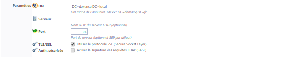
Identification
-
Watchdoc utilisera ce compte pour se connecter : cochez cette case si l'annuaire nécessite une authentification et complétez les paramètres suivants :
-
Identifiant : identifiant (login) du compte habilité à se connecter à l'annuaire
-
Mot de passe : mot de passe du compte habilité à se connecter à l'annuaire.
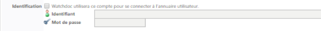
Code PUK
Configurez ici la manière dont le code PUK est généré :
Mode : sélectionnez dans la liste le mode de génération du code PUK :
-
Désactivé (par défaut) : optez pour ce statut si le code PUK n'est pas utilisé ;
-
Automatique : optez pour ce statut si le code PUK est généré automatiquement. Dans ce cas, complétez ensuite les champs :
-
Algorithme : sélectionnez dans la liste le type d'algorithme sur lequel est fondé le code (cette information relève de l'administration de l'annuaire) ;
-
Variabilité : sélectionnez dans la liste la fréquence selon laquelle l'algorithme de chiffrement du code PUK est renouvelé.
Attention : lorsque vous modifiez ce paramètre, le changement est opéré immédiatement. Ainsi, si, un lundi à 18h, vous optez pour l'option "Change tous les jours (à minuit)", les codes seront différents dès le mardi à 00h01. -
Préfixe : saisissez dans ce champ le préfixe (chiffre entre 2 et 8) qui précède le code PUK.
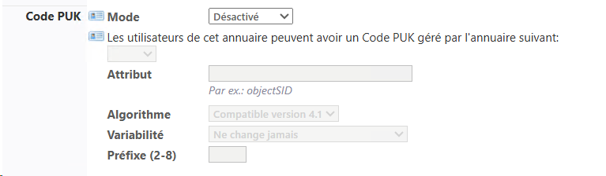
-
-
Attribut : optez pour ce statut si le code PUK est enregistré dans un attribut de l'annuaire LDAP. Dans ce cas, indiquez l'attribut de l'annuaire LDAP dans lequel est enregistré le code PUK ;
-
Déporté : optez pour ce statut si vous souhaitez que le code PUK sot enregistré dans une base de données SQL. Dans ce cas, sélectionnez dans la liste le nom de l'annuaire dans lequel doivent être enregistrés les codes PUK (PUK par défaut).
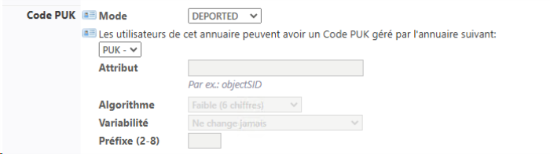
Code PIN
Code PIN (Personal Identification Number) est un code comportant au moins 4 chiffres. Il est par exemple utilisé sur un téléphone mobile ou un smartphone équipés d'une carte SIM. Le terme de code PIN n'est pas exclusif à la téléphonie mobile, on parle également de code PIN pour le code bancaire ou tout autre numéro d'identification personnel composé de 4 chiffres ou plus.
Dans Watchdoc, il est utilisé en complément d'un autre identifiant pour se connecter au WES.
Il peut être généré de différentes manières.
-
Mode : sélectionnez dans la liste le mode de génération du code PIN Code
 Le code PIN (Personal Identification Number) est un code comportant au moins 4 chiffres. Il est, par exemple, utilisé sur un téléphone mobile ou un smartphone équipés d'une carte SIM. Dans Watchhdoc, c'est un code qui, associé au nom d'utilisateur, constitue un moyen d'authentification sur un WES.
Ce code peut être saisi et consulté depuis la page Mon Compte.
Il est enregistré soit dans une table SQL, soit dans un fichier Json et peut être stocké tel quel ou sécurisé par hachage. :
Le code PIN (Personal Identification Number) est un code comportant au moins 4 chiffres. Il est, par exemple, utilisé sur un téléphone mobile ou un smartphone équipés d'une carte SIM. Dans Watchhdoc, c'est un code qui, associé au nom d'utilisateur, constitue un moyen d'authentification sur un WES.
Ce code peut être saisi et consulté depuis la page Mon Compte.
Il est enregistré soit dans une table SQL, soit dans un fichier Json et peut être stocké tel quel ou sécurisé par hachage. : -
Désactivé (par défaut) : optez pour ce statut si le code PIN n'est pas utilisé ;
-
Automatique : optez pour ce statut si le code PIN est généré automatiquement. Dans ce cas, complétez ensuite les champs Algorithme, Chiffres et Variabilité ;
-
-
Attribut : optez pour ce statut si le code PIN est enregistré dans un attribut de l'annuaire LDAP. Dans ce cas, complétez le champ Attibut ;
-
Attribut : indiquez dans ce champ l'attribut de l'annuaire LDAP dans lequel est enregistré le code PIN ;
-
-
Algorithme : si le mode est Automatique, sélectionnez dans la liste le type d'algorithme sur lequel est fondé le code (cette information relève de l'administration de l'annuaire). :
-
Chiffres : si le mode est Automatique, sélectionnez dans la liste le nombre de chiffre composant le code PIN (cette information relève de l'administration de l'annuaire) ;
-
Variabilité :si le mode est Automatique, sélectionnez dans la liste la fréquence selon laquelle l'algorithme de chiffrement du code PIN est renouvelé :
Attention : lorsque vous modifiez ce paramètre, le changement est opéré immédiatement. Ainsi, si, un lundi à 18h, vous optez pour l'option "Change tous les jours (à minuit)", les codes seront différents dès le mardi à 00h01. - Stocké dans les paramètres utilisateurs (en clair) : le code PIN est enregistré en clair dans l'annuaire. L'utilisateur peut l'afficher dans sa page "Mon compte" et peut également en générer un nouveau ;
- Stocké dans les paramètres utilisateurs (hashé) : le code PIN est enregistré de manière sécurisée dans la base Json.db. L'utilisateur ne peut pas l'afficher dans la page "Mon compte", mais il peut en générer un nouveau :
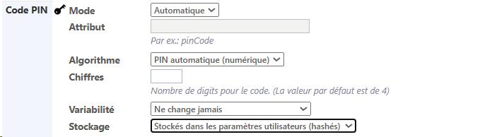
Code d'impression
Le code d'impression est un code qui permet à l'utilisateur de s'authentifier, en complément de son login, sur certains WES (Epson, Hewlett Packard, Konica Minolta, Sharp, Toshiba, Xerox).
Ce code alpha-numérique est saisi par l'utilisateur dans sa page "Mon compte > Codes et badges". Il doit contenir entre 4 et 16 caractères et ne doit pas contenir plus de 2 chiffres.
Pour être configuré dans le WES comme moyen d'authentifcation, il doit être configuré dans l'annuaire au préalable :
-
Sélectionnez l'activation du code en précisant :
-
s'il est enregistré en clair ;
-
s'il est sécurisé par l'algorithme AES (hashé, à condition que le hashage soit configuré dans l'annuaire LDAP) :
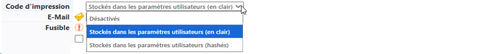
-
N.B. : si l'annuaire LDAP entre dans la composition de l'annuaire META, le code d'impression doit aussi être configuré sur l'annuaire META.
Badges
L'utilisateur peut s'authentifier sur le périphérique d'impression à l'aide d'un badge. Si c'est ce moyen d'authentification qui est retenu, sélectionnez dans la liste l'annuaire dans lequel sont enregistrés les badges des utilisateurs : ces derniers recevront ainsi un mail comportant leur code (PUK ou PIN) et les invitant à enrôler Action au cours de laquelle un compte utilisateur est associé au numéro de badge qui lui appartient. L'enrôlement est réalisé lors de la première utilisation d'un badge. L'enrôlement peut être réalisé par le responsable informatique lorsqu'il délivre le badge à un utilisateur ou par l'utilisateur lui-même qui saisit son identifiant (code PIN, code PUK ou identifiant et mot de passe) qui est alors associé à son numéro de badge. Une fois l'enrôlement réalisé, le numéro de badge est associé définitivement à son propriétaire. leur badge.
Action au cours de laquelle un compte utilisateur est associé au numéro de badge qui lui appartient. L'enrôlement est réalisé lors de la première utilisation d'un badge. L'enrôlement peut être réalisé par le responsable informatique lorsqu'il délivre le badge à un utilisateur ou par l'utilisateur lui-même qui saisit son identifiant (code PIN, code PUK ou identifiant et mot de passe) qui est alors associé à son numéro de badge. Une fois l'enrôlement réalisé, le numéro de badge est associé définitivement à son propriétaire. leur badge.
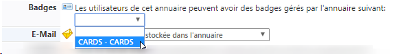
Avancé
Les champs de cette section répondent à des besoins de diagnostics en cas de dysfonctionnement des échanges entre l'annuaire LDAP et Watchdoc. Les paramètres par défaut ne sont donc à modifier qu'à la demande de l'équipe Support de Doxense®
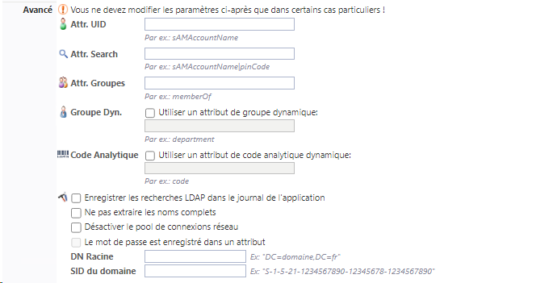
Timeout
Par défaut, Watchdoc comporte des valeurs définissant la durée de vie du cache relatif à l'annuaire. Ce cache permet de limiter les requêtes entre l'annuaire et Watchdoc afin de ne pas saturer la bande passante.
En règle générale, les valeurs saisies par défaut conviennent à la majorité des utilisations. Néanmoins, dans des cas très spécifiques, il peut être nécessaire de régler précisément la durée de vie du cache pour ne pas interrompre l'activité d'impression. C'est notamment utile dans le cas où le code PUK est modifié à fréquence régulière : il est alors nécessaire de supprimer le cache entre la génération des nouveaux codes PUK et le début de l'activité d'impression.
Pour chaque paramètre, indiquez dans le champ sa durée de vie. Au-delà de la durée définie, le cache sera vidé, obligeant ainsi Watchdoc à réinterroger l'annuaire pour y retrouver les informations (à jour) de l'utilisateur.
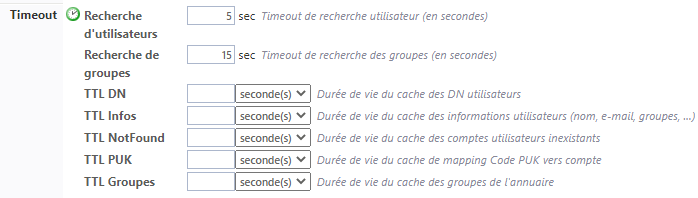
Cache
Watchdoc peut conserver en cache les requêtes sur l'annuaire afin d'en accélérer l'exécution.
Par défaut, la durée de vie (TTL La durée de vie (TTL - Time To Live) est la durée pendant laquelle un objet est stocké dans un système de mise en cache avant d’être supprimé ou actualisé.) des données d'annuaire mise en cache est de 72 heures.
La durée de vie (TTL - Time To Live) est la durée pendant laquelle un objet est stocké dans un système de mise en cache avant d’être supprimé ou actualisé.) des données d'annuaire mise en cache est de 72 heures.
Cochez les cases des caches que vous souhaitez activer :
Infos user : cochez cette case pour activer le cache relatif aux informations utilisateurs.
Non trouvés : cochez cette case pour activer le cache relatif aux utilisateurs dont le compte n'a pas été trouvé.
Cache à froid : cochez cette case pour conserver un cache des données "froides", c'est-à-dire des données déjà vérifiées mais expirées.
Persistance : cochez cette case pour permettre de conserver le cache sur le disque afin de le retrouver en cas de redémarrage du service Watchdoc.
Compression : cochez cette case pour activer la compression du cache sur le disque. Il est fortement recommandé d'activer ce paramètre afin de réduire la taille du fichier quand la persistance est activée.
Chiffrement : cochez cette case pour chiffrer le fichier de cache sur le disque afin d'en sécuriser le contenu.
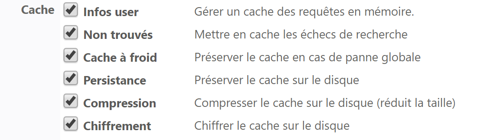
{kind=link}
Lorsque la notification par e-mail est activée, Watchdoc doit disposer de l'adresse mail des utilisateurs pour communiquer avec eux. Ce paramètre indique à Watchdoc où trouver l'adresse mail des utilisateurs :
stockée dans l'annuaire :sélectionnez cette option si l'adresse mail est enregistrée dans un attribut de l'annuaire ;
le compte utilisateur sert également d'adresse e-mail : sélectionnez cette option pour que Watchdoc crée l'adresse mail en concaténant le nom du compte de l'utilisateur avec un nom de domaine DNS. Dans ce cas, précisez le nom de domaine DNS à ajouter au nom de l'utilisateur lors de la concaténation ;
rechercher l'adresse dans un annuaire alias : optez pour ce choix si l'adresse e-mail est enregistrée dans un annuaire Alias. Dans ce cas, sélectionnez l'annuaire dans lequel sont enregistrées les e-mails. (Pour configurer un annuaire de codes PUK, cf. Configurer un annuaire SQL de codes PUK) :
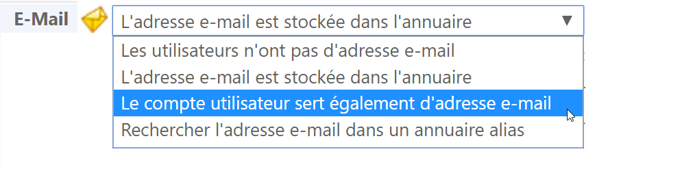
{kind=link}
Fusible
Les annuaires utilisateurs sont généralement hébergés sur un contrôleur de domaine ou serveur distant, accessible via le réseau local. En cas de panne réseau ou de ralentissement important, cela peut provoquer, par effet de cascade, un blocage ou ralentissement du serveur d'impression.
Il peut alors être utile d'activer un "fusible logique", qui se déclenche en cas de ralentissement majeur du système, afin de stopper les requêtes envoyées au serveur défaillant pour éviter une surcharge de travail.
Dans les champs, saisissez les valeurs au-delà desquelles Watchdoc cesse d'envoyer des requêtes au serveur d'annuaire :
Erreurs max. : il s'agit du nombre d'erreurs "graves" successives tolérées. Une erreur "grave" est, par exemple, un problème de communication réseau, un timeout, un dysfonctionnement du serveur distant. Ces erreurs sont généralement rares et peuvent parfois se régler naturellement (fin d'une période de pointe, redémarrage du serveur distant). Les erreurs "logiques" (comme un échec d'identification, de syntaxe ou de configuration de l'annuaire) sont ignorées.
Durée max. : il s'agit de la durée moyenne maximale tolérée pour l'exécution des 10 dernières requêtes. En cas de fort ralentissement du serveur distant (période de pointe, timeout réseau,...), cette durée est rallongée.
Requêtes max. : il s'agit du nombre maximum de requêtes en parallèle autorisées. En cas de forte charge de travail, le serveur distant peut ne pas être capable de répondre à un grand nombre de requêtes simultanées.
Délai attente : après déclenchement du fusible, délai d'attente avant réactivation. Au terme de ce délai, Watchdoc relance les requêtes afin de "sonder" l'état du serveur. Si les requêtes aboutissent, le fusible est réactivé, sinon il attend à nouveau l'expiration du délai. A tout moment, l'administrateur peut manuellement désactiver le fusible. Le fusible reste alors coupé jusqu'à ce qu'il soit réactivé manuellement. Pensez à utiliser cette fonctionnalité afin de tester l'impact d'une panne sur le serveur d'impression.
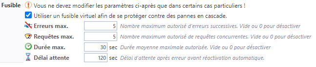
{kind=link}
Les valeurs généralement saisies pour l'activation du fusible dans un environnement multi serveur (Master) sont les suivantes :
erreurs max : 5
requêtes max : 5
durée max : 30 secondes
délai attente : 120 secondes
Print clients
Ne pas utiliser cet annuaire : cochez cette case pour que Watchdoc Print Client n'utilise pas cet annuaire
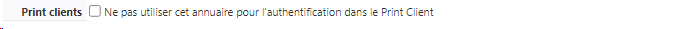
Validation de la configuration
Cliquez sur le bouton Créer pour valider la configuration de votre annuaire.
Et après ?
Une fois l'annuaire LDAP déclaré, vous pouvez l'intégrer comme sous-annuaire de l'annuaire META (cf. Déclarer et configurer un annuaire META).